arXiv 2503.15558 · cs.AI · v3 2025 年 5 月 19 日 · NVIDIA 技术报告 · 中文精读
Cosmos-Reason1: From Physical Common Sense To Embodied Reasoning
作者署名 NVIDIA，共 52 人（Alisson Azzolini、Junjie Bai、Yin Cui、Tsung-Yi Lin、Ming-Yu Liu、Shuran Song 等），贡献明细在原文附录 C。
关于这份精读。论文在 arXiv 上以 CC BY 4.0 登记，但 PDF 第 1 页页脚印着 “© 2025 NVIDIA. All rights reserved.”，两者有矛盾（读者注 1）。这一批（第八批，NVIDIA Cosmos 与 GR00T）由站点作者决定一律放原图：图 1 到图 12 从 v3 PDF 裁切，只做了裁切和格式转换，没有改内容；图 9 到 12 是很长的文字框，只裁了带视频帧和问题的上半部分，回答部分用文字概述。图下的文字是我写的。
我读的是最新的 v3（2025-05-19），按原文顺序覆盖第 1 到 9 节和附录 A 到 C，小节编号同原文。v1 和 v3 差别很大：小模型从自研混合骨干的 8B 换成了基于 Qwen2.5-VL 的 7B，训练从四段缩成两段，见下面的版本差异一节。用自己的话写，不逐字翻译；表格数字照录原文。“读者注”是我核算或对照的结果，不属于论文内容，页尾有汇总。
代码。官方仓库 nvidia-cosmos/cosmos-reason1，我读的是 commit b84a3fa（2026-06-07，“Add Cosmos 3 README redirect”），只读，没有运行。代码 Apache 2.0，权重 NVIDIA Open Model License。仓库自己说它只有文档、示例和工具，训练框架在另一个仓库 cosmos-rl（我没有读）。README 顶部已写明不再积极维护，新工作转到 Cosmos 3。我还读了 Hugging Face 上模型卡、config.json 和三个数据集仓库的标注 JSON（只有文本标注，没有下载视频和权重）。
大语言模型做数学和编程推理已经很强，但看一段视频、判断物理上会发生什么、机器人下一步该做什么，它们常常答不好。Cosmos-Reason1 是一组视频输入、文字输出的多模态大模型，先在 <think> 里写长思维链，再给出答案，答案可以是一个判断，也可以是下一步动作（用自然语言说）。
论文的做法分四块：
主要数字：7B 版物理常识 47.4 → 54.3（SFT），具身推理 50.8 → 61.8（SFT），加 RL 后六项具身加常识平均 60.7 → 65.7；直觉物理 42.1 → 74.5 → 81.5。56B 版物理常识 60.2，略高于 OpenAI o1 的 59.9。
读完我认为值得记住的三点：
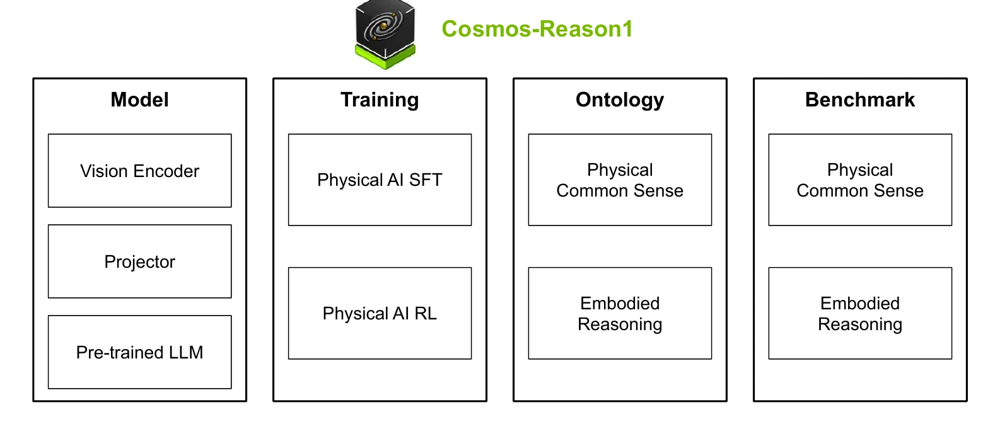
v2（2025-04-02）和 v1 只差贡献者名单里多了一个人，正文和表格相同。v3 改动大，我把三个版本的 PDF 文本逐行比对过，主要差别如下。
| 项目 | v1 / v2 | v3（本页所读） |
|---|---|---|
| 小模型 | Cosmos-Reason1-8B：InternViT-300M + 混合 Mamba-MLP-Transformer（52 层，d = 4096） | Cosmos-Reason1-7B：直接用 Qwen2.5-VL-7B（ViT-676M + 28 层稠密 Transformer） |
| 大模型 | 56B，InternViT-300M + Nemotron-H 混合骨干 | 同左，配置和结果数字完全不变 |
| 训练阶段 | 4 段：视觉预训练（只训投影器，1.3 亿样本）、通用 SFT（600 万图文 + 200 万视频）、物理 AI SFT、物理 AI RL | 2 段：物理 AI SFT、物理 AI RL（前两段由 Qwen2.5-VL / Nemotron-H-VLM 自带） |
| 小模型 SFT | 40K 步 1e-5 + 40K 步 1e-6，批 32 | 12.5K 步，余弦从 1e-5 降到 1e-6，批 256 |
| RL 框架 | 基于 Ray 的自研框架，渐进批处理，vLLM 推理 | 新写一节 §4.2：完全异步、异构部署、容错，图 5 是新图 |
| 表 4、表 5 | BridgeData 129.5K、RoboVQA 221.9K / 930K、AgiBot 19.8K、HoloAssist 136.7K；RL RoboVQA 250 题，总 30,302 | 略小：129.2K / 129.1K、218.5K / 920.0K、19.4K、136.3K；RL RoboVQA 252，总 30,304（正文的数没改，见读者注 10） |
| 表 7、8 基线 | 有 Qwen2.5-VL-72B 和 “8B pre-trained backbone” 两行 | 删掉 72B；小模型基线换成 Qwen2.5-VL-7B，且具身那一行的数字变了（读者注 17） |
| 小模型结果 | 常识 52.3；具身 60.0；RL 后 9 项平均 58.9 → 67.1（+8.2）；直觉物理 65.7 → 68.7 | 常识 54.3；具身 61.8；RL 后 60.7 → 65.7（+5.0）；直觉物理 74.5 → 81.5 |
| 开源说法 | “will make … available” | “we make … available”（5 月 17 日已放出 7B 权重和数据） |
arXiv 摘要页登记 CC BY 4.0（三个版本相同），PDF 第 1 页页脚却写 “© 2025 NVIDIA. All rights reserved.”。这和本站 SONIC、GraspGen 的情况一样，按 AGENTS.md 的规则在这里写明。另一个小事：v3 PDF 的元数据标题是 “Cosmos World Foundation Model Platform for Physical AI”（pdfinfo 读出），那是另一篇 Cosmos 论文（cosmos 页）的标题，应是沿用了 LaTeX 模板，不影响内容。
v3 表 7、表 8 里 Cosmos-Reason1-56B 和它的骨干（v1 叫 “56B pre-trained backbone”，v3 叫 Nemotron-H-56B）每一格都和 v1 相同，包括 Space/Time/Physics 61.3/65.5/53.9、具身平均 63.7。所以 v3 只重做了小模型。这也意味着 v3 里两种尺寸的模型骨干、视觉编码器、视频处理都不一样（7B 动态分辨率，56B 固定 448×448），7B 和 56B 的差距不能只归因于参数量。论文没有解释为什么放弃 8B 混合模型；我推测和公开权重有关（发布的只有 7B，模型卡写明基于 Qwen2.5-VL-7B-Instruct），但这是推测。
问题。长思维链（chain-of-thought，CoT）和测试时扩展让 LLM 在代码和数学上推理很强，但它们的知识没有扎根在物理世界：读过大量文字，未必能把知识和真实的交互、动力学联系起来。
做法。先定义物理 AI 需要的能力（§2），用两套本体组织：物理常识按空间、时间、基础物理分 16 个子类；具身推理是 4 种能力 × 5 类主体。模型是解码器式（decoder-only）多模态 LLM：视频经视觉编码器和投影器变成和文字 token 同一空间的向量，拼在文字前面送进 LLM（§3）。骨干试了稠密 Transformer 和混合 Mamba-MLP-Transformer 两种。
能不能像数学题那样设计规则可验证的奖励？论文的答案是用选择题：一类来自人工标注；另一类借鉴视频自监督，从视频结构本身自动生成，比如打乱的时空小块拼图、判断视频是正放还是倒放（时间箭头）。这些奖励都能用规则判对错（§4）。
数据。约 400 万条视频-文本标注，包括理解用的描述、选择题、长推理链（§5）。基准。物理常识 604 题（426 段视频），具身推理 610 题（600 段视频），覆盖人、机械臂、人形、自动驾驶（§6）。结果在 §7。代码和模型按 NVIDIA Open Model License 发布。
两种能力：物理常识是与本体无关的对环境的一般理解，是判断什么合理、什么不合理的基础；具身推理是帮具身主体感知、推理、规划和环境的交互。两者都想同时覆盖“系统 1”（快速直觉）和“系统 2”（慢速推敲）。
婴儿几个月就懂物体恒存和重力，靠的主要是被动观察。真实环境里训练 AI 贵且危险，有物理常识的系统可以少试错、少犯致命错误。论文的本体只规定能力，不规定实现机制或身体形态（参考 Morris 等 2024 的 AGI 分级思路）：要懂物体之间的空间关系、事件的时间顺序、物体恒存，但不必像人一样用五指抓或两条腿走。
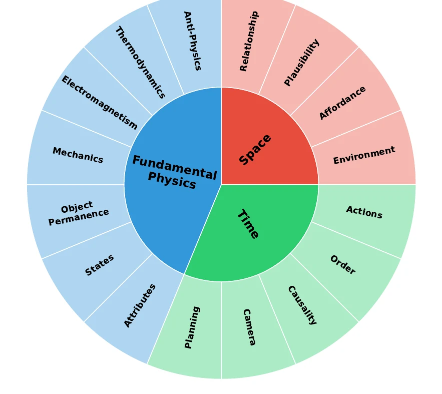
| 类：子类 | 能力（我的概括） |
|---|---|
| 空间：关系 | 判断场景中物体的空间关系，注意视角（人的左边还是相机的左边） |
| 空间：合理性 | 判断某种空间关系是否可能 |
| 空间：可供性 | 理解物体和人、动物、机器人等主体的交互方式 |
| 空间：环境 | 理解场景和周围环境 |
| 时间：动作 | 描述动作（运动、方向、力度），判断目的、分解子任务，判断任务是否完成 |
| 时间：顺序 | 理解时间戳和事件先后 |
| 时间：因果 | 判断事件 A 是否导致 B |
| 时间：相机 | 相机位置和运动：运镜、机位角度、转场 |
| 时间：规划 | 根据过去的观察给出未来计划 |
| 基础物理：属性 | 语义、尺寸、颜色、材质、质量、温度、固态（物体能否互相穿过）等 |
| 基础物理：状态 | 物体状态和状态变化（冰化成水、蛋从生到熟） |
| 基础物理：物体恒存 | 哪些性质在一定条件下能变、不能变（重量、形状、大小、颜色） |
| 基础物理：力学 | 静力学（平衡、支撑、弹性、形变、质心）、运动学（速度、加速度、转动）、动力学（重力、碰撞、摩擦、惯性、动量守恒、流体和颗粒） |
| 基础物理：电磁 | 光学（光照、阴影、遮挡、反射、折射、衍射、吸收、透射）、电、磁 |
| 基础物理：热力学 | 热、温度变化、蒸发、传热、热胀冷缩 |
| 基础物理：反物理 | 违反物理定律的情形：反重力、时间倒流、永动、突然消失 |
和数学、编程那种在干净符号上的确定性推理不同，具身推理要立足于动作，在不确定的动态环境里理解当下、规划未来。论文列了四种能力：
这些能力对人、动物、机械臂、人形、自动驾驶车都适用，所以做成二维表（表 2）。
| 能力 | 自然主体（人、动物） | 机器人系统（机械臂、人形、自动驾驶车） |
|---|---|---|
| 处理感官输入 | 看菜谱视频；蝙蝠回声定位 | 机械臂用相机认物体；机器人走路时发现障碍；车认出停车标志和行人 |
| 预测动作效果 | 木匠预料锯木会劈裂；狗估计球落点 | 机械臂抓取前补偿动量；机器人抬起前估重量；车预测冰面打滑 |
| 遵守物理约束 | 飞行员保持在气动极限内；猎豹限速防拉伤 | 夹爪限力防夹碎；调关节力矩防摔；无人机不超风阻阈值 |
| 从交互中学习 | 高尔夫球手看轨迹改站姿；狗反复尝试学会开门 | 工厂机器人发现错位后改进对齐；机器人学新握手；车调整刹车距离 |
本文实际覆盖的范围只是前三种能力，“从交互中学习”留作以后。“处理感官输入”只看视频；“预测动作效果”落到两个任务：任务完成验证（这个子任务做成了吗）和下一步合理动作预测；“遵守物理约束”落到动作可供性（这个动作现在能不能做）。主体只有人、机械臂、人形、自动驾驶车四类，没有动物。
一个专做物理 AI 推理的多模态 LLM 家族，两种尺寸：7B 和 56B。
多模态 LLM 常见两种结构：解码器式（LLaVA）把图像 token 和文字 token 放进同一个自注意力序列；交叉注意力式（Flamingo、Llama 3-V）让文字通过交叉注意力层看图像。论文选解码器式，理由是简单、所有模态统一对齐到文字嵌入空间（NVLM-D 的对比结论是它在多学科和数学视觉推理上更强）。结构是：视觉编码器 → 带下采样的两层 MLP 投影器 → 解码器 LLM。
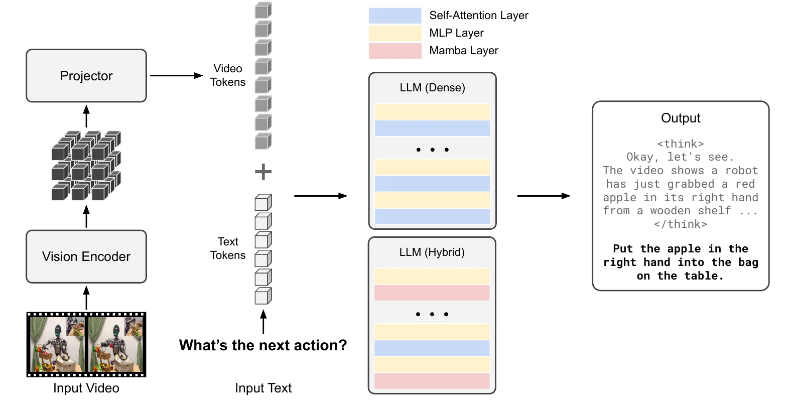
<think> 里的推理，再是答案 “Put the apple in the right hand into the bag on the table.”表 3 是两种模型的配置，照录原文：
| 配置 | Cosmos-Reason1-7B | Cosmos-Reason1-56B |
|---|---|---|
| 视觉编码器 | ||
| 结构 | ViT-676M | ViT-300M |
| 输入尺寸 | 动态 | 448 × 448 |
| Patch | 14 × 14 | 14 × 14 |
| 层数 | 32 | 24 |
| 模型维度 | 1,280 | 1,024 |
| FFN 隐层 | 3,456 | 4,096 |
| 投影器 | ||
| 下采样（H×W×T） | 2×2×2 | 2×2×1 |
| 层数 | 2 | 2 |
| 输入 / 隐层 / 输出维度 | 1,280 / 5,120 / 3,584 | 4,096 / 32,768 / 8,192 |
| LLM 骨干 | ||
| 结构 | Transformer | Mamba-MLP-Transformer |
| 层数 | 28 | 118 |
| 模型维度 | 3,584 | 8,192 |
| FFN 隐层 | 18,944 | 32,768 |
| 注意力头数 | 28 | 64 |
Hugging Face 上 nvidia/Cosmos-Reason1-7B 的 config.json（commit 375e240）里 vision_config.intermediate_size = 3420，Qwen2.5-VL 原版也是这个值。我按 Qwen2.5-VL 的视觉塔结构数参数：patch 嵌入 3×2×14×14×1280，每块 qkv 和输出投影带偏置、SwiGLU 三个矩阵带偏置、两个 RMSNorm，32 块共 631.98M；加上 merger（LayerNorm 1280，5120→5120→3584 两层带偏置）44.57M，合计 676.55M。用表里的 3,456 则是 680.98M。所以 “ViT-676M” 指的是视觉塔加投影器，且对应 3,420；表里的 3,456 我认为是笔误。另外 config 里视觉塔用窗口注意力（window_size 112，只有第 7、15、23、31 块是全局注意力），论文没提。
56B：每帧 \((448/14)^2=1024\) 个 patch，2×2 下采样后 256 个，最多 32 帧，\(32\times256=8192\) 个视频 token。7B：论文只说“照 Qwen2.5-VL 的处理”，没给帧率和分辨率；代码 configs/vision_config.yaml 和模型卡用 fps = 4、total_pixels = 6422528，注释写着 \(6422528=8192\times28^2\)，即每个视觉 token 管 28×28 像素（14 的 patch 再 2×2 合并）且时间上 2 帧合 1，于是整段视频最多约 8192 个 token。两者上限相同，但 7B 用更高帧率换更低的每帧分辨率。“2×2×2” 里的时间维 2 是 Qwen2.5-VL 的 patch 嵌入（temporal_patch_size = 2）做的，不在投影器里；表 3 把它记在投影器下，读的时候要注意。
按表 3 算两层 MLP 的权重：56B 是 \(4096\times32768+32768\times8192=4.03\times10^8\)，约 4 亿参数，比它的 ViT-300M 还大；7B 是 \(5120\times5120+5120\times3584=4.46\times10^7\)。56B 的输入 4,096 = 1,024 × 4，正是 PixelShuffle 把 2×2 个 1024 维向量拼成一个。v1 的 8B 投影器是 4096 → 21504 → 4096，约 1.76 亿。
自注意力的计算量随上下文长度平方增长；Mamba 用选择性状态空间做线性时间的序列建模，处理长序列更省。但状态空间未必能记住长序列里的每个细节，所以加入少量 Transformer 层，就成了混合结构（Waleffe 等 2024）。56B 用的就是预训练好的 Nemotron-H。7B 用张量并行 TP = 4 训练，56B 用 TP = 8、流水线并行 PP = 2。
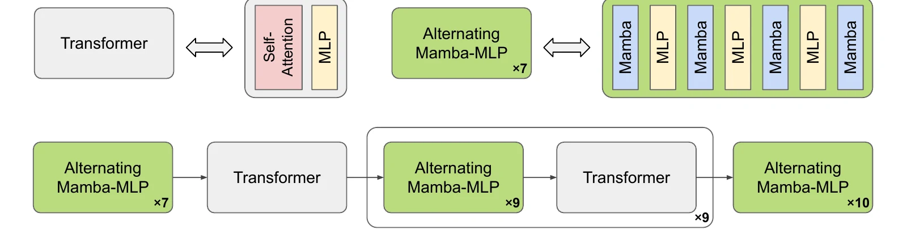
把 “×k” 读成 k 层（图例那样以 Mamba 开头、交替排列）：\(7+2+9\times(9+2)+10=118\)，和表 3 的 118 层对上。再分类：Mamba \(4+9\times5+5=54\)，MLP \(3+10+9\times4+5=54\)，自注意力 \(1+9=10\)，合计 118，注意力只占 8.5%。另外，图 3 的图例里自注意力是浅蓝、Mamba 是粉色，图 4 里正好反过来（注意力粉、Mamba 蓝），两张图配色不一致，对照着看容易看反。
自己画的 · 11 幕 3D 框架动画
整个框架拆成 11 幕：总览、两套本体、视频变 token（可切 7B / 56B）、混合骨干的 118 层、SFT 数据流水线、直觉物理的三种自监督题（第 6 幕当场生成拼图和倒放）、SFT 数据配比、GRPO 的组内优势（第 8 幕当场算）、RL 框架、基准与结果、推理部署。论文和代码不一致的地方会标出来。
两段训练把预训练好的视觉语言模型（Qwen2.5-VL 或 Nemotron-H-VLM）变成物理 AI 推理模型：先物理 AI SFT，再用物理 AI 任务做 RL。这一节讲算法和训练框架，数据在 §5，实验在 §7.2。
用 GRPO（组相对策略优化，来自 DeepSeekMath），不用训练单独的价值网络（critic）。对每个提示采样一组回答 \(\mathcal G=\{o_1,\dots,o_G\}\)，用组内的均值和标准差把奖励归一化成优势：
原文这个式子没有编号。完整的 GRPO 目标（重要性比、截断、KL 项）论文没写，只在 §7.2.1 给了 KL 系数。
选择题奖励只有对错两种值。同一题的 \(G\) 个回答如果全对或全错，分子全是 0（分母也是 0，实现里通常加一个小常数），这一组对梯度没有贡献。设模型答对概率为 \(p\)，\(G=9\)（§7.2.1）时一组全同的概率是 \(p^9+(1-p)^9\)：\(p=0.5\) 时 0.4%，0.7 时 4.0%，0.8 时 13.4%，0.9 时 38.7%，0.95 时 63.0%。所以太容易的题大多浪费算力。论文 §5.2 把常识 RL 题按四个模型是否全答对分成易、难两组，我认为和这个有关，但论文没说两组怎么用，也没说是否过滤全同组。
论文提出一个完全异步、容错的 RL 训练框架。主流框架（OpenRLHF、veRL）把训练和采样放在同一批卡上（colocated），同步开销导致资源利用率低。这里改为异构部署：策略训练和采样（rollout）分开放，由统一的调度器（dispatcher）分发提示，整条流水线异步并行，论文说训练效率比 colocated 框架提高约 160%。另外：任一节点故障时训练网格能快速重组、继续当前步，不用重启；调度器有冗余；容错设计天然支持动态扩缩容。
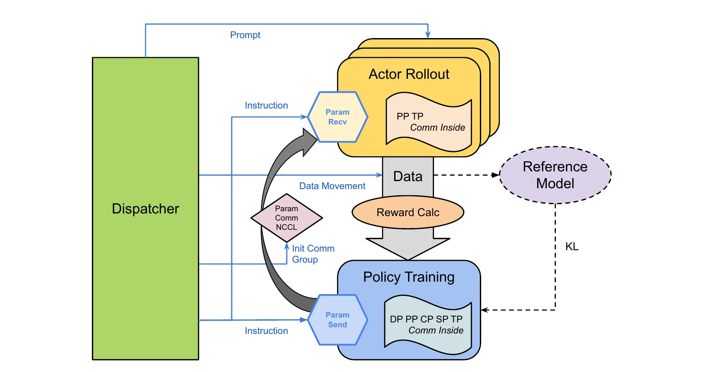
图注说策略训练节点支持 5D 并行：DP、PP、CP、FSDP、TP；图里写的是 DP、PP、CP、SP、TP。序列并行（SP）和全分片数据并行（FSDP）是两回事。“约 160% 的效率提升”正文和附录都没有给测量条件、模型尺寸或吞吐数字，无法核对。这个框架后来以 cosmos-rl 开源，本页没读它的代码。
这一节讲物理 AI SFT 和 RL 两个阶段的数据来源和整理流程。
目标是两件事：在物理 AI 数据上增强视觉语言能力；培养物理常识推理和具身推理。现成数据不能直接用，所以专门做了整理流水线，一部分 VQA 对由模型在环生成。物理常识做自由问答和选择题；具身推理从现有数据集里抽样改造，覆盖人、机械臂、人形、自动驾驶车。每个数据集有两类标注：理解（常识题的问答，或对视频中状态和动作的结构化描述）和推理（给定提示和视频的长思维链）。另外专门做了直觉物理数据：空间拼图、时间箭头、物体恒存。
表 4 照录原文：
| 常识 自由问答 | 常识 选择题 | BridgeData V2 | RoboVQA | AgiBot | HoloAssist | AV | 拼图 | 时间箭头 | 物体恒存 | 合计 | |
|---|---|---|---|---|---|---|---|---|---|---|---|
| 理解 | 99K | 1.2M | 129.2K | 218.5K | 19.4K | 136.3K | 12.4K | - | - | - | 1.81M |
| 推理 | 59.4K | 605.0K | 129.1K | 920.0K | 19.4K | 136.3K | 12.3K | 11.0K | 30.0K | 10.0k | 1.93M |
数据集链接：BridgeData V2（论文）、RoboVQA（论文）、AgiBot World（论文）、HoloAssist（论文）。AV 是 NVIDIA 私有数据。
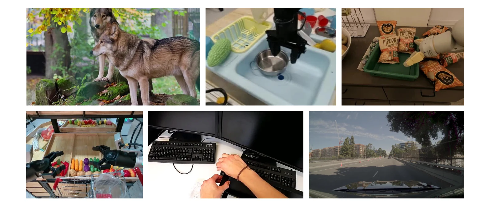
五步流水线：
自由问答：9.9K 段高质量片段，人工描述平均 297.4 ± 46.4 词，得到约 99K 理解样本和 59.4K 推理样本。选择题：先用 VLM 给约 1.2M 段高质量片段写描述，构造约 2.4M 道理解选择题；再从中取约 356K 段，出约 600K 道推理选择题。
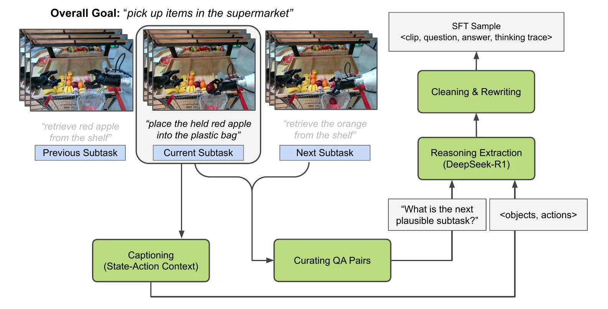
关注三种决策能力：任务完成验证、动作可供性、下一步合理动作预测，都是短时程的（下一个动作或下一个子任务）。每条数据有视觉描述、问题、答案、推理链四部分。通用步骤：
各数据源的处理：
正文：BridgeData 129.5K 段、RoboVQA 约 220K 段 / 约 930K 问答、AgiBot 19.8K 段、HoloAssist 139,653 段。v1 的表 4 恰好是 129.5K、221.9K / 930K、19.8K、136.7K；v3 表 4 改成 129.2K / 129.1K、218.5K / 920.0K、19.4K、136.3K，正文没跟着改。Hugging Face 数据卡给的 SFT 条数是 RoboVQA 1.14m、BridgeData 258k、AgiBot 38.9k、HoloAssist 273k、AV 24.7k，正好是 v3 表 4 理解加推理两行之和（218.5 + 920.0 = 1138.5K；129.2 + 129.1 = 258.3K；12.4 + 12.3 = 24.7K），所以发布的数据对应 v3 的表。
前面的数据培养领域内推理，这里补更基础的能力。三类题都是构造时自带答案的自监督任务，数据整理简单。论文说当前最强的 VLM 在这些简单任务上仍明显不行。
正文：30,000 段片段加各自的倒放版，“每个正放和倒放视频各写两条推理”。按这个说法推理样本最多应有 \(30000\times2\times2=120{,}000\) 条，表 4 写 30.0K。可能 30K 是原始片段数，也可能最终只抽了一部分，论文没交代。HF 上没有发布直觉物理数据，无法核对。
数学和代码的答案有明确格式，物理常识和具身推理通常是开放式回答，奖励不好定。做法是把 SFT 推理数据（去掉推理链）改成只有一个正确选项的选择题，用规则判断对错。拼图、时间箭头、物体恒存本来就是二选一或选择题。RL 样本都经过人工检查。表 5：
| 常识选择题 | BridgeData V2 | RoboVQA | AgiBot | HoloAssist | AV | 拼图 | 时间箭头 | 物体恒存 | 合计 | |
|---|---|---|---|---|---|---|---|---|---|---|
| 推理 | 5,133 | 240 | 252 | 200 | 200 | 200 | 3,998 | 9,994 | 10,087 | 30,304 |
\(5133+240+252+200+200+200+3998+9994+10087=30{,}304\)，和合计一致；直觉物理三项 \(3998+9994+10087=24{,}079\)，和正文一致。v1 的 RoboVQA 是 250，合计 30,302，也自洽。HF 数据集 nvidia/Cosmos-Reason1-RL-Dataset（commit 5095534）只有四个文件：AgiBot 200、BridgeData 240、HoloAssist 200、RoboVQA 252（来自 250 段视频），共 892 题，等于表 5 里这四格；常识 5,133 题、AV 200 题和直觉物理 24,079 题没有发布（数据卡说 AV “即将上传”）。选项均衡这一点在公开数据里能看到：BridgeData 240 题的正确答案 A/B/C/D 各 60 题，RoboVQA 252 题 A/B 各 126。
用视频加是非题或选择题评测，只看最终答案是否正确，不评价推理链的质量。论文说这些题“按构造必须推理才能答对”。
| 常识选择题 | BridgeData V2 | RoboVQA | RoboFail | AgiBot | HoloAssist | AV | 合计 |
|---|---|---|---|---|---|---|---|
| 604 | 100 | 110 | 100 | 100 | 100 | 100 | 1214 |
表 6 · 基准统计。RoboFail 来自 REFLECT（论文）。公开部分在 Cosmos-Reason1-Benchmark。
按 §2.1 的本体，对互联网视频片段人工出题。先收集 5,737 题（2,828 道是非、2,909 道选择），再人工精选 604 题（426 段视频）：336 道是非、268 道选择；空间 80 题（13.25%）、时间 298 题（49.33%）、基础物理 226 题（37.4%）。
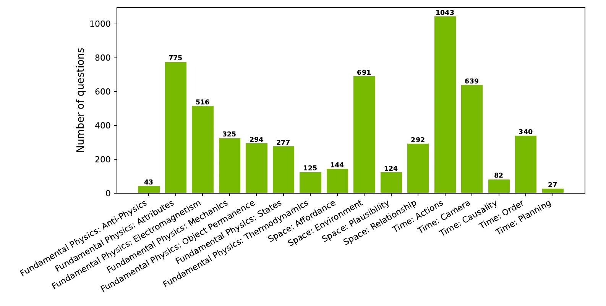
图 8 的 16 根柱子：\(43+775+516+325+294+277+125+144+691+124+292+1043+639+82+340+27=5737\)，等于 \(2828+2909\)。最终 604 题只给了三大类：\(80+298+226=604\)，\(336+268=604\)；百分比 \(80/604=13.25\%\)，\(298/604=49.34\%\)（原文 49.33），\(226/604=37.42\%\)。每个子类在最终基准里有多少题论文没给，所以“规划”“因果”这些小类在 604 题里可能只有个位数，表 7 也只按三大类报。
和 SFT 一样只考三种能力：任务完成验证、动作可供性、下一步合理动作预测。全部做成选择题以便自动评测。三个措施：
具身部分 \(100+110+100+100+100+100=610\) 题，引言说来自 600 段视频；但 RoboVQA 是 101 段，其余五个各 100 段，合起来是 601。HF 的 nvidia/Cosmos-Reason1-Benchmark（commit dc73eea）我数了标注文件：RoboVQA 110 题来自 101 段视频（和正文一致），RoboFail、AgiBot、BridgeData、HoloAssist 各 100 题。没有 AV，也没有 604 道常识题。RoboVQA 和 RoboFail 全是二选一，答案 A/B 各占一半，所以这两项的随机水平是 50%；BridgeData 100 题都是四选一，A/B/C/D 各 25；AgiBot 有 83 道四选一、14 道三选一、3 道二选一。
设置。7B 训 12.5K 步，学习率余弦从 \(1\times10^{-5}\) 降到 \(1\times10^{-6}\)，全局批 256。56B 先以 \(1\times10^{-5}\) 训 30K 步，再以 \(1\times10^{-6}\) 训 20K 步，全局批 32。融合 Adam，\(\beta_1,\beta_2=(0.9,0.95)\)，权重衰减 0.1。按领域均衡采样，避免某个领域过多。自己的模型报 5 次推理的平均准确率（温度 0.6，top-p 0.95，不同随机种子）。其他模型用零样本思维链提示，GPT-4o、OpenAI o1、Gemini 2.0 Flash 调 API，Qwen2.5-VL 用开源权重。
SFT 见过的样本数：7B \(12{,}500\times256=3.2\)M，56B \(50{,}000\times32=1.6\)M，v1 的 8B \(80{,}000\times32=2.56\)M。表 4 共 3.75M 条，所以名义上都不到一轮，而且是均衡采样，小来源会被重复、大来源（常识选择题、RoboVQA）只用到一部分。RL：500 步 × 128 题 = 64,000 题，约是 30,304 题的 2.1 轮；每题 9 个回答，共 576,000 条回答，每条最长 6,144 token。
两个模型都比各自的骨干明显提高，56B 最好，略高于 OpenAI o1。
| 方法 | 空间 | 时间 | 其他物理 | 平均 |
|---|---|---|---|---|
| Gemini 2.0 Flash | 53.8 | 50.0 | 46.9 | 50.2 |
| GPT-4o | 61.3 | 54.7 | 50.9 | 55.6 |
| OpenAI o1 | 63.8 | 58.1 | 58.0 | 59.9 |
| Qwen2.5-VL-7B | 48.8 | 56.4 | 37.2 | 47.4 |
| Nemotron-H-56B | 61.3 | 68.1 | 45.1 | 58.2 |
| Cosmos-Reason1-7B | 54.2 | 58.7 | 50.0 | 54.3 (+6.9) |
| Cosmos-Reason1-56B | 61.3 | 65.5 | 53.9 | 60.2 (+2.0) |
表 7 · 物理常识基准，照录原文。
每行的平均都等于三列的算术平均（Gemini \((53.8+50.0+46.9)/3=50.23\)）。按题数加权（80、298、226）结果不同：o1 是 58.82 而不是 59.9，Cosmos-Reason1-56B 是 60.60。基线的分数都能还原成整数题数：o1 空间 51/80 = 63.75%、时间 173/298 = 58.05%、物理 131/226 = 57.96%，三者平均 59.92 → 59.9；Qwen2.5-VL-7B 39/80、168/298、84/226，平均 47.43 → 47.4。所以基线是单次评测。另外注意 56B 的时间类 65.5 低于它的骨干 68.1，提升全来自物理类（45.1 → 53.9）。
两个尺寸都比各自骨干高 10 个点以上。
| 模型 | BridgeData V2 | RoboVQA | AgiBot | HoloAssist | AV | RoboFail | 平均 |
|---|---|---|---|---|---|---|---|
| Gemini 2.0 Flash | 25.0 | 78.2 | 29.0 | 44.0 | 37.0 | 67.0 | 46.7 |
| GPT-4o | 42.0 | 71.8 | 32.0 | 65.0 | 46.0 | 63.0 | 53.3 |
| OpenAI o1 | 42.0 | 80.0 | 44.0 | 63.0 | 37.0 | 61.0 | 54.5 |
| Qwen2.5-VL-7B | 38.0 | 82.5 | 40.4 | 50.0 | 36.0 | 57.6 | 50.8 |
| Nemotron-H-56B | 37.0 | 77.2 | 37.0 | 65.0 | 41.0 | 64.0 | 53.5 |
| Cosmos-Reason1-7B | 58.8 | 83.8 | 49.4 | 63.0 | 55.6 | 60.0 | 61.8 (+11.0) |
| Cosmos-Reason1-56B | 65.0 | 80.0 | 47.6 | 57.8 | 65.8 | 66.2 | 63.7 (+10.2) |
表 8 · 具身推理基准，照录原文。
平均也是六列简单平均（Qwen \((38+82.5+40.4+50+36+57.6)/6=50.75\) → 50.8）。单次评测在 100 题的子集上应是整数、在 RoboVQA 110 题上应是 \(k/110\)：Gemini、GPT-4o、o1、Nemotron-H-56B 都满足（如 78.2 = 86/110，77.2 = 85/110）。Qwen2.5-VL-7B 这一行不满足：40.4、57.6 不是整数，82.5% × 110 = 90.75 题。看起来是多次平均，但 §7.1 说 5 次平均只用于“我们的模型”。这一行在 v1 是 34.0 / 85.5 / 44.0 / 43.0 / 39.0 / 63.0（平均 51.4），v3 换成现在的数，论文没说明改了什么评测设置。另外 RoboVQA 和 RoboFail 是二选一（随机 50%），Qwen 在 RoboFail 上 57.6 只比随机高 7.6 个点。
为三个任务各整理 100 段视频、100 道题，按 §5.1.3 的流程生成，并做了去重，保证和训练数据不重叠。结果见表 10（在 §7.2 后）。现有模型在时间箭头和物体恒存上几乎是随机水平；GPT-4o 和 o1 的空间拼图明显高于随机。论文的解读是现有多模态模型更擅长空间关系而不是时间动态，而它们在 MMMU 这类标准基准上表现好，说明现有评测没有测到对物理世界的理解。Cosmos-Reason1-7B 在三项上都大幅提高。
两种规则奖励：
<answer></answer> 里的内容和标准答案做字符串匹配（只用选择题，所以可行）。<think></think>、答案放在 <answer></answer>，用正则判断。训练时每个 RL 数据集等概率采样，选项顺序每次随机打乱。全局批 128 题，每题采样 9 个回答，每个最长 6,144 token；学习率 \(4\times10^{-6}\)，KL 惩罚系数 0.005，训 500 步。两个奖励怎样加权论文没写。
| 模型 | 常识 | BridgeData V2 | RoboVQA | AgiBot | HoloAssist | AV | RoboFail | 平均 |
|---|---|---|---|---|---|---|---|---|
| Cosmos-Reason1-7B | 54.3 | 58.8 | 83.8 | 49.4 | 63.0 | 55.6 | 60.0 | 60.7 |
| + 物理 AI RL | 56.2 | 73.5 | 86.8 | 54.2 | 60.0 | 67.0 | 62.0 | 65.7 (+5.0) |
表 9 · 物理常识与具身推理，RL 前后（只有 7B）。
| 模型 | 时间箭头 | 空间拼图 | 物体恒存 | 平均 |
|---|---|---|---|---|
| 随机猜 | 50.0 | 25.0 | 50.0 | 41.7 |
| Gemini 2.0 Flash | 50.0 | 31.0 | 48.0 | 43.0 |
| GPT-4o | 50.0 | 77.0 | 48.0 | 58.3 |
| OpenAI o1 | 51.0 | 64.0 | 49.0 | 54.7 |
| Qwen2.5-VL-7B | 50.2 | 27.2 | 48.8 | 42.1 |
| Cosmos-Reason1-7B | 56.0 | 85.4 | 82.0 | 74.5 (+32.4) |
| + 物理 AI RL | 64.5 | 94.0 | 86.0 | 81.5 (+7.0) |
表 10 · 直觉物理基准，每项 100 题。
论文说 RL 让多数子项提高，唯一的例外是 RoboFail，它在 SFT 和 RL 两个阶段都难。原因：RoboFail 是手工挑的难题，要求细致观察或完整时间上下文，可供性题涉及复杂的物理约束。作者把停滞归因于缺少有代表性的训练数据，错误模式包括复杂可供性推理不足、没注意到关键视觉细节、遇到分布外的微妙问题时想太多；他们有意把 RoboFail 留在评测里作为待改进的指标。
v3 表 9：RoboFail 60.0 → 62.0（+2.0），HoloAssist 63.0 → 60.0（−3.0），其余五项都涨。所以 v3 里唯一下降的是 HoloAssist，正文却说 RoboFail 是例外。v1 表 9 里 RoboFail 是 62.0 → 61.2（下降），HoloAssist 57.6 → 72.2，正文那段话和 v1 吻合，v3 换了模型和数字但没改文字。表 9 平均：SFT 行 \(425.0/7=60.71\)，RL 行 \(459.7/7=65.67\)，差 4.96，表里写 +5.0。
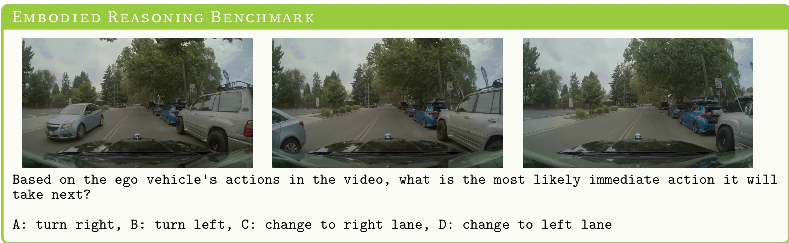
论文认为这是有意思的现象：RL 之后，模型遇到有歧义的题会逐个评估选项，必要时全部拒绝，采取选项之外的保守动作（图 9）。
§7.2.1 的准确率奖励是 <answer> 内容和标准答案做字符串匹配，选项又是单一正确答案的选择题，所以回答 “none” 的准确率奖励是 0（格式对的话还有格式奖励）。这种行为不是这套奖励直接鼓励的，论文也没说训练集里有没有“都不对”的题，以及这道题的标准答案是什么。我认为它更像是一个有趣的个例，不宜读成 RL 学到了“拒绝”能力。另外图 10 的 RL 后回答里，“The text on the screen remains constant …”整句重复了两遍，是 CoT 的复读现象，原图如此。
§9 说 SFT 让骨干在物理常识和具身推理基准上提高 10% 以上，RL 再提高 5% 以上。按表 7、8：具身 +11.0 和 +10.2 成立，物理常识只有 +6.9（7B）和 +2.0（56B）。RL 的 +5.0 实际是 4.96（读者注 18），也不算“超过”。这些是百分点，不是相对提高。
直觉物理像自监督学习一样容易扩量：时间箭头只要倒放视频，拼图对任何图片都能做，物体恒存在任何仿真环境里都能实现，而且都能直接用于带可验证奖励的 RL，所以 RL 数据量比常识和具身大得多，几乎不需要人工。
表 10：SFT 让三项都大幅提高，RL 进一步提高拼图和物体恒存；论文说时间箭头“仍是难点”（不过 v3 表里它从 56.0 涨到 64.5，是三项里涨得最多的，见读者注 21）。定性例子：
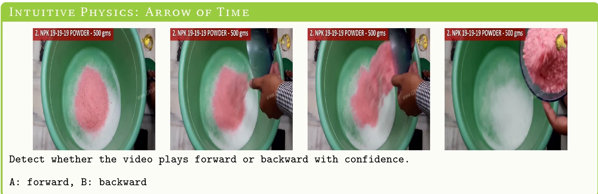
论文的解读：RL 后模型能识别违反重力的运动（粉末升回碗里），不受静止干扰物影响，说明它的推理不只是感知。图 11（附录 B）里，RL 前的模型把空间题当成时间题，默认按帧顺序选；RL 后会先提取首帧的关键特征，再逐帧比较。图 12 里，RL 前的模型在物体恒存题上写了很长的思维链反而把自己绕晕；RL 后推理直接、简短。
平均都是三项简单平均：随机 \((50+25+50)/3=41.67\)；7B \((56.0+85.4+82.0)/3=74.47\) → 74.5；RL \((64.5+94.0+86.0)/3=81.5\)。拼图四选一，随机 25% 对。“时间箭头仍是难点”这句话来自 v1：v1 的 8B 是 57.0 → 56.7（RL 后略降），物体恒存 54.8 → 62.0。v3 的 7B 是 56.0 → 64.5、物体恒存 82.0 → 86.0，结论的措辞没跟着变。100 题时 1 题 = 1 个点，85.4、64.5 这类小数来自 5 次平均。
8.1 物理 AI 的基础模型。早期把现成 LLM / VLM 当静态模块：零样本任务规划（SayCan 等）、Code as Policies 生成控制代码。这些模型不是为物理交互设计的，缺物理常识。另一条路是端到端训练视觉-语言-动作模型（VLA：RT-2、PaLM-E、OpenVLA、Magma、Gemini Robotics），从 VLM 出发用机器人数据微调；其中分层方法（Hi Robot、HAMSTER）让高层 VLM 出计划、低层 VLA 做精细控制。增强推理的工作有具身思维链 ECoT、REFLECT（RoboFail 的来源）等失败解释与纠正方法，以及先预测未来图像再预测动作的 CoT-VLA。自动驾驶方面有 CoVLA 数据集。
8.2 视觉语言模型。Flamingo、LLaVA、InternVL、QwenVL、NVLM、Llama-3.2-Vision。解码器式（LLaVA、InternVL）把图像 token 放进自注意力；交叉注意力式（Flamingo、Llama-3.2-Vision）通过交叉注意力层。NVLM 的对比发现解码器式在多学科和数学视觉推理上更强，所以本文用解码器式。
8.3 有推理能力的 LLM / VLM。从数学、代码上的基础推理，到 CoT 提示，再到 o1 用大规模 RL 增强推理，DeepSeek-R1 公开了训练方法。已有工作主要在代码、数学、STEM，近期很多工作把 R1 式推理接到 VLM 上（Vision-R1 等）。本文研究物理 AI 场景下的推理。
论文提出 Cosmos-Reason1：定义物理 AI 需要的基础能力的两套本体，据此构造 SFT 数据和基准；用规则可验证的奖励做 RL，提升空间、时间和直觉物理推理。实验结论是 SFT 让骨干在物理常识和具身推理基准上提高 10% 以上，RL 再提高 5% 以上（这两个说法的精确程度见读者注 20），模型能学会时间箭头、物体恒存这些现有模型做不好的直觉物理。代码和模型开源、开放权重。
六个提示词模板，用来说明数据是怎样“把视频变成文字再交给 LLM”的。要点概括如下，全文可以看原文第 26 到 29 页 ↗。
<action> 下一步动作 </action>。<think>/<answer> 格式回答。最终 SFT 数据去掉了这条提示。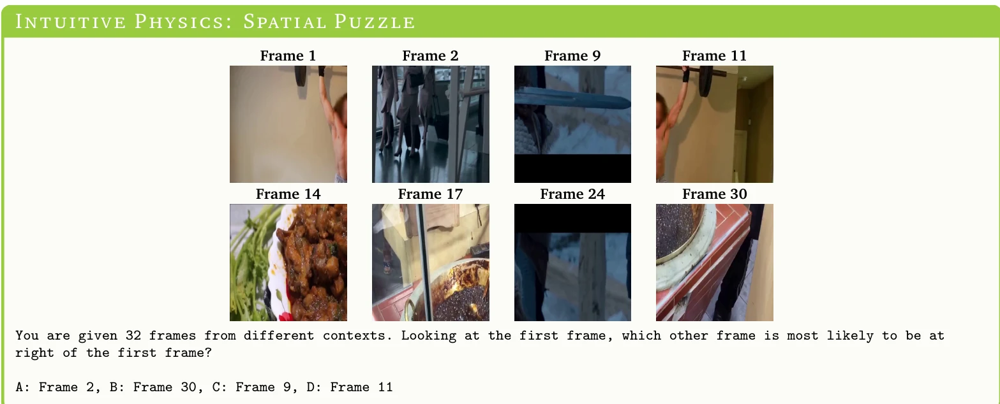
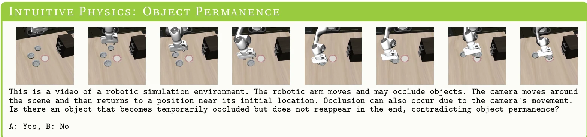
核心贡献者 36 人，另有 16 位贡献者。分工大致是：Yin Cui、Shuran Song、Ming-Yu Liu、Tsung-Yi Lin 定义两套本体；多人分别负责常识数据和基准、具身数据和基准、描述方法、直觉物理数据与推理链；Boxin Wang、Nayeon Lee、Zhuolin Yang、Wei Ping 训练基础 VLM；另有 SFT 基础设施、SFT 训练、RL 基础设施、RL 训练各组；Yin Cui、Tsung-Yi Lin 组织写作，Ming-Yu Liu、Tsung-Yi Lin 设计整体系统。致谢里提到 Moo Jin Kim 搭了物体恒存数据采集的仿真环境（他也是 OpenVLA 的作者）。
仓库 nvidia-cosmos/cosmos-reason1 @ b84a3fa（2026-06-07），Apache 2.0。它只包含推理脚本、提示词、后训练示例和基准评测示例，不包含论文的训练代码和 56B 模型（全仓库没有 56B 或 Nemotron 字样）。模型 nvidia/Cosmos-Reason1-7B 是 Qwen2_5_VLForConditionalGeneration，transformers ≥ 4.51.3 可直接加载。
| 项目 | 论文（v3） | 代码 / HF |
|---|---|---|
| 骨干 | 7B：Qwen2.5-VL-7B | config.json：28 层、3584、FFN 18944、28 头（KV 头 4）；视觉 32 层、1280、FFN 3420（表 3 写 3,456，见注 3） |
| 视频输入 | “照 Qwen2.5-VL 处理” | fps 4，total_pixels 6,422,528（≤ 8192 个视觉 token）；模型卡建议 fps 4 以匹配训练 |
| 评测采样 | 温度 0.6、top-p 0.95，5 个种子平均 | examples/benchmark/configs/evaluate.yaml：温度 0.6、seed 1（单次）、max_tokens 1024，空答案最多重试 10 次、每次加 256 token；top-p 0.95 写死在 evaluate.py 第 378 行 |
| 答案判定 | 字符串匹配 | utils/output.py 从 <answer> 里取一个大写字母，和标准答案忽略大小写比较 |
| RL 示例 | lr 4e-6，每题 9 个回答，KL 0.005，最长 6144，500 步 | examples/post_training/configs/rl.toml：GRPO，lr 2e-6，n_generation 8，kl_beta 0.0，max_response_length 6144，rollout 温度 0.9，截断 ε = 0.2，奖励 ["single_choice", "format"]，只用 RoboVQA 子集 |
| SFT 示例 | lr 1e-5 → 1e-6，Adam β = (0.9, 0.95)，wd 0.1，批 256 | sft.toml：AdamW lr 2e-6，β = (0.9, 0.999)，wd 0.01，每副本批 32，1 个 epoch，RoboVQA 理解子集 |
| 公开数据 | 表 4、5、6 | SFT：BridgeData、RoboVQA、AgiBot、HoloAssist 的标注（AV 待传），只有 RoboVQA 带视频；RL：四个具身子集 892 题；基准：5 个具身子集（含 RoboFail 视频），无 AV、无常识 604 题 |
rl.toml 和 sft.toml 是在 Cosmos-Reason1-7B 上继续微调 RoboVQA 子集的教程，超参和论文表述的训练不同：RL 学习率 2e-6 对 4e-6，每题 8 个回答对 9 个，KL 系数 0 对 0.005；SFT 学习率 2e-6、β₂ 0.999、权重衰减 0.01 对论文的 1e-5、0.95、0.1。论文也没给 GRPO 的截断 ε 和 rollout 温度，教程里分别是 0.2 和 0.9。想复现论文数字的话，这些示例只能当起点。
(1) 论文报 5 次平均，脚本默认单次（seed 1）。(2) 脚本默认 max_tokens 1024，而 RL 训练允许 6,144、模型卡建议 ≥ 4096；推理链被截断时脚本靠“空答案重试、每次加 256 token”补救，最多到 3,584。(3) utils/input.py 第 169 行先写 “Answer with the option's letter from the given choices directly.”，第 173 行在推理模式下又追加“按 <think>…</think> <answer>…</answer> 格式回答”，两条指令相互矛盾。(4) 模型卡给出的当前权重（2025-08-01 版）在具身基准上是 RoboVQA 87.3、AV 70.8、BridgeData 63.7、AgiBot 48.9、HoloAssist 62.7、RoboFail 57.2，平均 65.1；卡上说明“和表 9 不同，因为后来为更多任务做了额外训练”。按表 9 的 RL 行算六项具身平均是 \((73.5+86.8+54.2+60.0+67.0+62.0)/6=67.25\)，所以现在下载到的权重和论文报告的不是同一个检查点。我没有运行任何评测。
论文正文多处写“我们开放代码和预训练模型”，但仓库、模型卡和 Hugging Face 合集里只有 7B。56B 的混合骨干、投影器和训练都只能读论文。另外 7B 的权重从 2025-05-17 首发后更新过两次（6 月加强物理合理性判断，8 月加时间戳描述和 Set-of-Mark 提示），用的时候注意版本。
这一页和 OpenWAM 没有直接关系（OpenWAM 用的是 Cosmos-Predict2.5 和 Cosmos 3 的视频骨干，不用 Cosmos-Reason1），所以不设“和 OpenWAM 的关系”一节。和同批页面的联系：
以下各条都是本页加的核算或对照，不属于论文内容。点编号跳到对应位置。
论文没写、我也没找到的：两个 RL 奖励的权重；GRPO 的截断和是否过滤全同组；常识 RL 数据易、难两组怎么用；最终 604 题的子类分布；AV 数据的来源和地区；SFT 各来源的采样权重。
文中提到的数据集、基准和模型。链接在 2026 年 11 月 16 日用脚本核对，除标注外都返回 200。
| 名称 | 是什么 | 主页 | 论文 |
|---|---|---|---|
| Cosmos-Reason1 | 本文 | 代码 · 权重 | 2503.15558 |
| Cosmos-Reason1-Benchmark | 公开的具身基准 | huggingface.co | 本文 |
| Cosmos-Reason1-SFT-Dataset | 公开的 SFT 标注，CC BY 4.0 | huggingface.co | 本文 |
| Cosmos-Reason1-RL-Dataset | 公开的 RL 选择题 | huggingface.co | 本文 |
| BridgeData V2 | 机械臂操作数据 | rail-berkeley.github.io/bridgedata | 2308.12952 |
| RoboVQA | 机器人视频问答 | robovqa.github.io | 2311.00899 |
| AgiBot World | AgiBot G1 操作数据 | github.com/OpenDriveLab/AgiBot-World | 2503.06669 |
| HoloAssist | 第一人称操作视频 | holoassist.github.io | 2309.17024 |
| RoboFail（REFLECT） | 机器人失败解释 | robot-reflect.github.io | 2306.15724 |
| LIBERO | 物体恒存数据的仿真来源 | libero-project.github.io · 本站精读 | 2306.03310 |
| ECoT | BridgeData 的物体和动作标注 | embodied-cot.github.io | 2407.08693 |
| MMMU | §7.1.3 提到的通用基准 | mmmu-benchmark.github.io | 2311.16502 |
| Qwen2.5-VL | 7B 的骨干 | github.com/QwenLM/Qwen2.5-VL | 2502.13923 |
| Nemotron-H | 56B 的混合骨干 | – | 2504.03624 |
| InternVL 2.5 / InternViT-300M | 56B 的视觉编码器 | github.com/OpenGVLab/InternVL | 2412.05271 |
| NVLM | 结构和 56B 图像处理的来源 | – | 2409.11402 |
| DeepSeek-R1 | 推理链来源、规则奖励思路 | – | 2501.12948 |
| GRPO（DeepSeekMath） | RL 算法 | – | 2402.03300 |
| Mamba / 混合 Mamba | §3.2 | – | 2312.00752 · 2406.07887 |
| cosmos-rl | 异步后训练框架 | github.com/nvidia-cosmos/cosmos-rl | – |